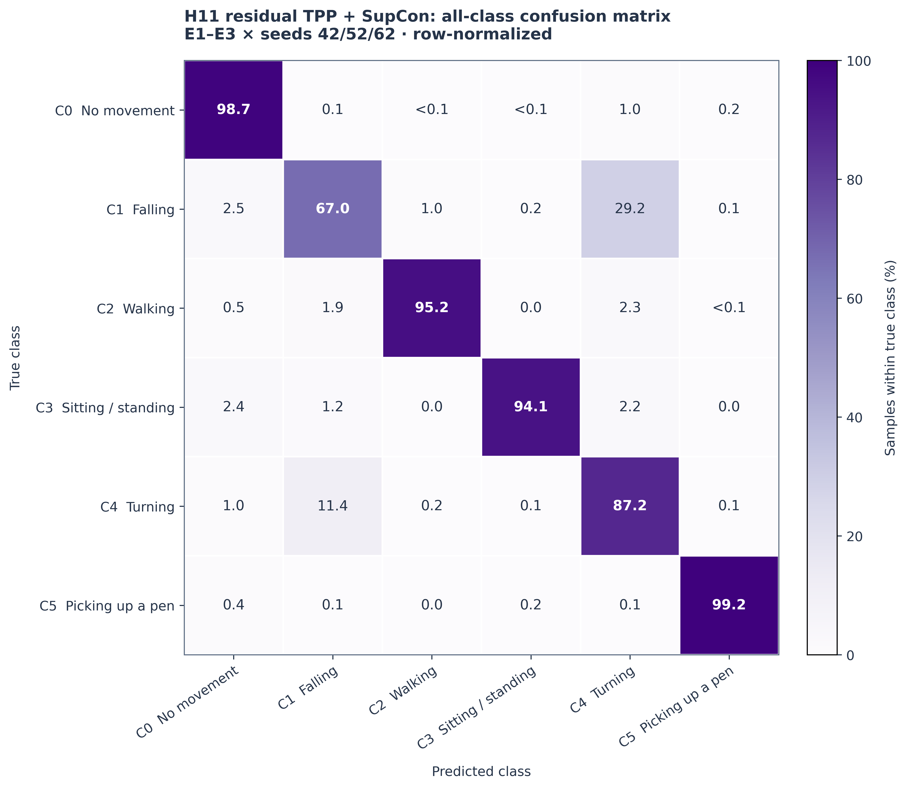

Core training logic
Dataset/split logic, model carrier, DG losses, samplers, training and evaluation.
Open source tree →Wi-Fi CSI · Leave-one-environment-out HAR
A matched 2×2 study showing that bounded multi-resolution temporal structure and supervised contrastive learning are complementary under a locked three-environment protocol.
Three held-out environments, three seeds, domain-class-balanced batches, 200 epochs, matched splits and sampler draws, and delayed target evaluation after checkpoint freeze.
Residual TPP supplies the main gain; SupCon becomes beneficial after temporal structure is exposed.
Aggregated over E1–E3 and seeds 42/52/62, then normalized within each true class.

| Class | H00 F1 | H11 F1 | Change |
|---|---|---|---|
| C0 No movement | 96.66% | 98.25% | +1.59 pp |
| C1 Falling | 58.71% | 73.41% | +14.70 pp |
| C2 Walking | 92.03% | 96.86% | +4.83 pp |
| C3 Sitting / standing | 96.13% | 96.55% | +0.41 pp |
| C4 Turning | 66.18% | 77.75% | +11.57 pp |
| C5 Picking up a pen | 99.78% | 98.72% | −1.06 pp |
The first release focuses on the core implementation, locked experiment runners, portable configuration, and compact result summaries.
Dataset/split logic, model carrier, DG losses, samplers, training and evaluation.
Open source tree →Audited H00/H01/H10/H11 generation, execution, checkpoint replay and analysis.
Open experiment →Locked L1248 follow-up with paired target-by-seed analysis and safety checks.
Open experiment →{kind=link}